First step in understanding a time series is vizualization. While time series analysis offer most valuable information, it is useful to inspect the data visually in order to identify and understand some structural patterns such as long-term movement, seasonality, irregular fluctuations, abrupt changes, or unusual observations.
We’re going to explore several options for plotting time series in R. We’re using similar examples with those from previous chapters. The goal is not only to produce plots, but also to show how the choice of representation affects plotting syntax and graphical flexibility.
Note
Our comparison will cover basic aspects from time series frameworks, especially base ts, zoo/xts, and tidy plotting pipelines built around ggplot2 and tsibble.
Code
# The libraries (the full set, as previously identified)library(ggplot2)library(ggfortify)library(zoo)library(xts)library(tsibble)library(dplyr)library(tibble)library(tidyr)library(timeSeriesDataSets)library(tsbox)# Running and loading example datasetsdata(gtemp_both_ts, package ="timeSeriesDataSets")data(gtemp_land_ts, package ="timeSeriesDataSets")data(gtemp_ocean_ts, package ="timeSeriesDataSets")# Common helper objectsgtemp_years <-floor(as.numeric(time(gtemp_both_ts)))# gtemp as dataframes (explicit conversion, also check tsbox options)gtemp_df <-tibble(year =as.numeric(time(gtemp_both_ts)),anomaly =as.numeric(gtemp_both_ts))# gtemp as tsiblle objects (explicit conversion, also check tsbox options)gtemp_tsibble <-tibble(year = gtemp_years,anomaly =as.numeric(gtemp_both_ts)) |>as_tsibble(index = year)# gtemp as zoo (explicit conversion, also check tsbox options)gtemp_zoo <-zoo(as.numeric(gtemp_both_ts),order.by =as.numeric(time(gtemp_both_ts)))# gtemp as xts (explicit conversion, also check tsbox options)gtemp_xts <-xts(cbind(land_ocean =as.numeric(gtemp_both_ts),land =as.numeric(gtemp_land_ts),ocean =as.numeric(gtemp_ocean_ts) ),order.by =as.Date(paste0(gtemp_years, "-01-01")))# gtemp as multivariate ts (explicit conversion, also check tsbox options)gtemp_multi_ts <-ts(cbind(land_ocean =as.numeric(gtemp_both_ts),land =as.numeric(gtemp_land_ts),ocean =as.numeric(gtemp_ocean_ts) ),start =start(gtemp_both_ts),frequency =frequency(gtemp_both_ts))# gtemp as multivariate dataframes (explicit conversion, also check tsbox options)gtemp_multi_df <-tibble(year = gtemp_years,land_ocean =as.numeric(gtemp_both_ts),land =as.numeric(gtemp_land_ts),ocean =as.numeric(gtemp_ocean_ts))# gtemp as multivariate tsibble (explicit conversion, also check tsbox options)gtemp_multi_tsibble <- gtemp_multi_df |>pivot_longer(cols =c(land_ocean, land, ocean),names_to ="series",values_to ="anomaly" ) |>as_tsibble(index = year, key = series)# Additional multivariate examples for panel layoutsfour_ts <- EuStockMarkets[, 1:4]# eu_xts <- as.xts(EuStockMarkets)eu_xts <-ts_xts(EuStockMarkets)
4.2 Your First Plot of a Time Series
In fact, you already have some experiences with time series plots. Just a reminder for the direct plotting options.
Figure 4.3: Autoplot of the global temperature anomaly series from a ts object.
NoteObservation
The three alternatives were already used in previous recipes: direct base plotting, explicit ggplot2 plotting from tabular data, and automatic plotting from a time-series object.
Please notice that ggplot and autoplot use a simplified syntax in these examples. Check the available options (see aes – aesthetics, labs – labels, and other options).
4.3plot.ts() and Variants
The plot.ts() method can be used explicitly, covering both uni- and multi-variate time series.
plot.ts( gtemp_both_ts,col ="steelblue",lwd =2,main ="Global Temperature Anomalies with plot.ts()",xlab ="Year",ylab ="Temperature anomaly")
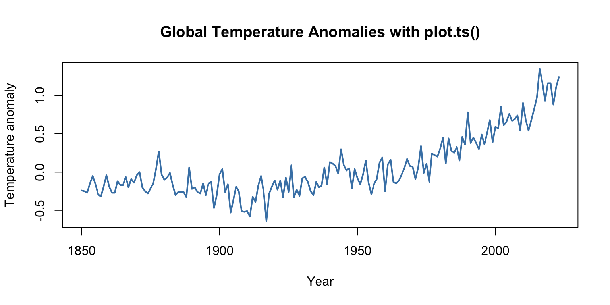
Figure 4.4: Explicit use of plot.ts() for a univariate ts object.
Code
plot.ts( gtemp_multi_ts,plot.type ="single",col =c("steelblue", "firebrick", "darkgreen"),lty =1:3,lwd =2,main ="Temperature Series on a Single Plot",xlab ="Year",ylab ="Temperature anomaly")legend("topleft",legend =colnames(gtemp_multi_ts),col =c("steelblue", "firebrick", "darkgreen"),lty =1:3,lwd =2,bty ="n")
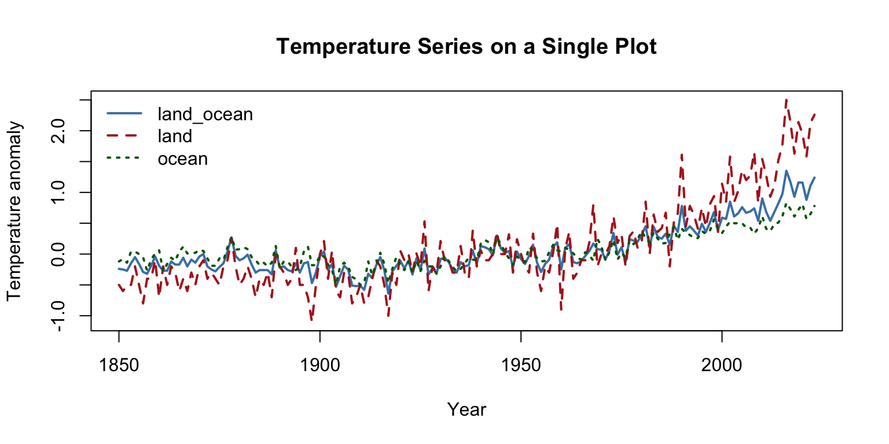
Figure 4.5: A multivariate ts object displayed on a single plot with plot.ts(plot.type = "single").
Code
plot.ts( gtemp_multi_ts,plot.type ="multiple",col =c("steelblue", "firebrick", "darkgreen"),lwd =2,main ="Temperature Series in Separate Panels",xlab ="Year",ylab ="Temperature anomaly")
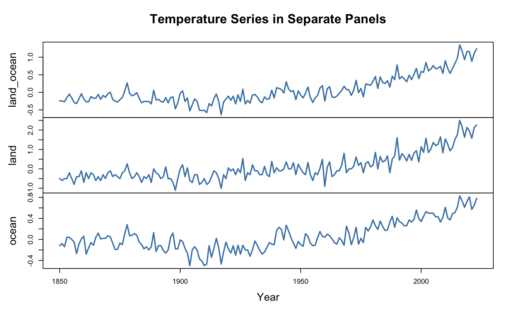
Figure 4.6: A multivariate ts object displayed with separate panels via plot.type = "multiple".
Code
plot.ts( four_ts,plot.type ="multiple",nc =2,col =2:5,lwd =1.5,main ="EuStockMarkets in a 2-Column Layout",xlab ="Year",ylab ="Index level")
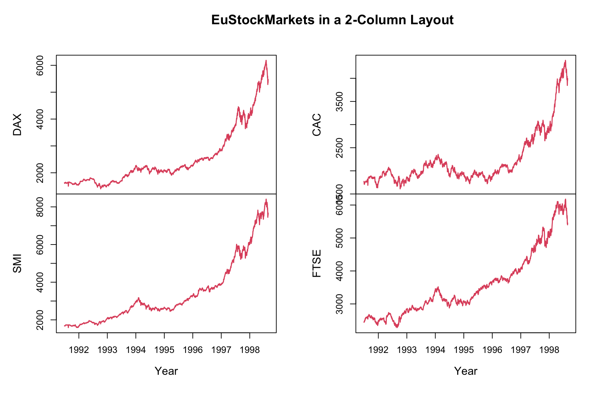
Figure 4.7: A multivariate ts object arranged with multiple panels and a custom number of columns using nc = 2.
Figure 4.8: A restricted time window of the temperature anomaly series, obtained with window() before plotting.
Notice the use of the window() function. A new frequency may be specified, if needed.
Code
air_annual <-aggregate(AirPassengers, nfrequency =1, FUN = mean)plot.ts( air_annual,col ="purple",lwd =2,main ="AirPassengers Aggregated to Annual Frequency",xlab ="Year",ylab ="Average passengers")
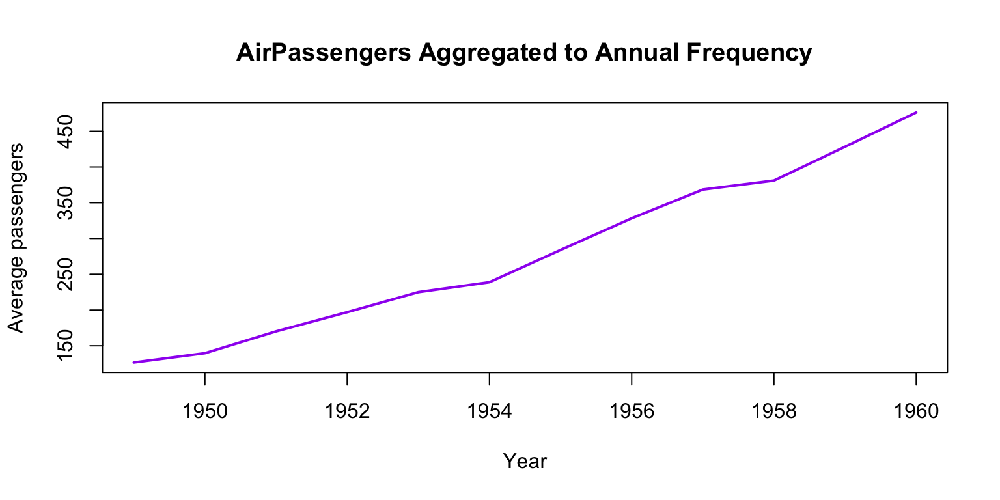
Figure 4.9: A ts plot after changing the series frequency by aggregation. Here, monthly AirPassengers data are converted to annual averages before plotting.
aggregate was used to change the frequency (previous frequency was frequency(AirPassengers)), while applying the specified function.
Code
plot.ts( stats::lag(gtemp_both_ts, -1), gtemp_both_ts,pch =19,col ="navy",cex =0.8,main ="Lag Plot of Global Temperature Anomalies",xlab ="Lagged anomaly",ylab ="Current anomaly")
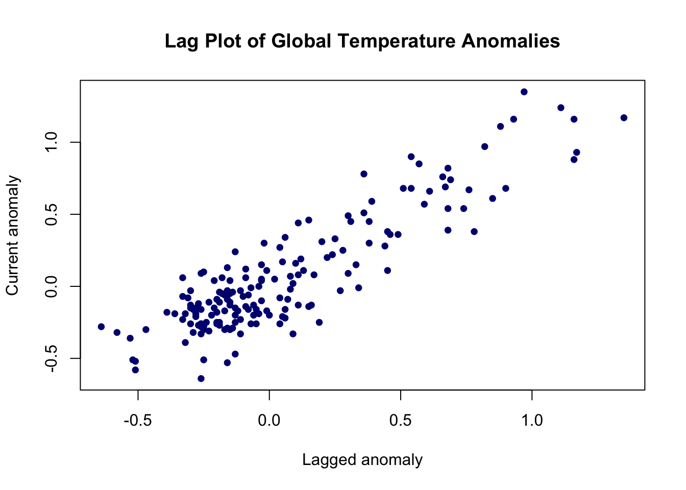
Figure 4.10: A lag-style / phase-style plot obtained by passing two univariate ts objects to plot.ts(x, y).
NoteDiscussion
plot.ts() is especially useful when working directly with ts and multivariate ts objects. Its built-in plot.type, nc, and x–y capabilities make it richer than many users initially expect.
4.4ts.plot() for Common-Axis
Somehow similar to plot.ts, the ts.plot() method is well suited for plotting several time series on a common plot when they share a common frequency.
Figure 4.11: Three temperature anomaly series plotted together with ts.plot().
Code
ts.plot( gtemp_land_ts, gtemp_ocean_ts,gpars =list(col =c("firebrick", "darkgreen"),lty =c(1, 2),lwd =2,xlab ="Year",ylab ="Temperature anomaly" ),main ="Land and Ocean Series with gpars")legend("topleft",legend =c("land", "ocean"),col =c("firebrick", "darkgreen"),lty =c(1, 2),lwd =2,bty ="n")
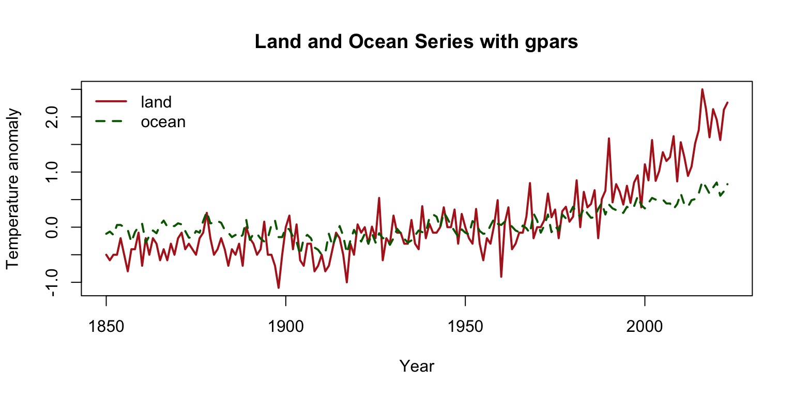
Figure 4.12: Use of gpars inside ts.plot() to forward graphical options.
NoteComment
Compared with plot.ts(plot.type = "single"), ts.plot() is often the simpler choice when the main intention is to overlay separate series on a common axis.
4.5zoo and xts indexed time series
This time, our focus is on the representation of time series where the index is explicit.
plot( gtemp_zoo,col ="firebrick",lwd =2,main ="Global Temperature Anomalies as zoo",xlab ="Year",ylab ="Temperature anomaly")
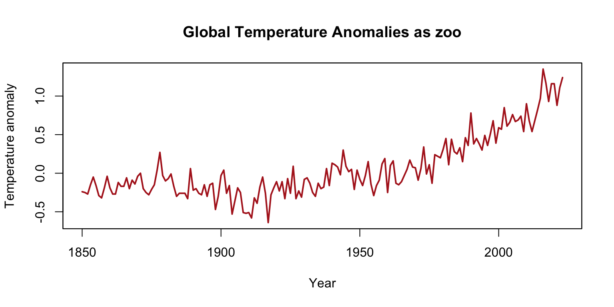
Figure 4.13: Plot of the temperature anomaly series stored as a zoo object.
Code
plot.xts( gtemp_xts[, "land_ocean"],col ="steelblue",type ="l",lwd =2,main ="Global Temperature Anomalies with plot.xts()",major.ticks ="years",ylab ="Temperature anomaly")
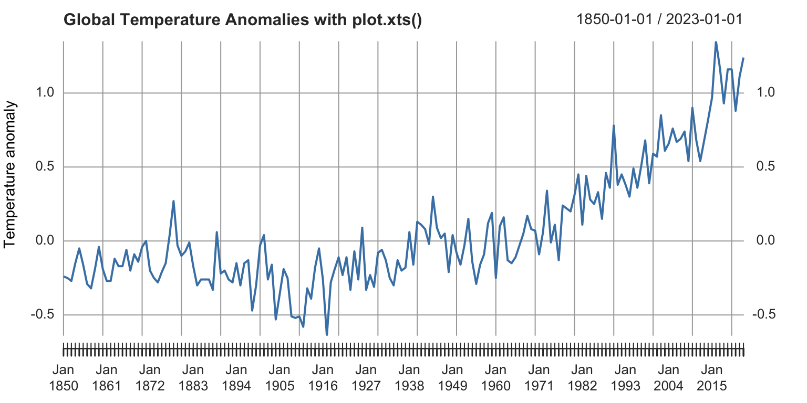
Figure 4.14: Explicit use of plot.xts() for an indexed series.
Code
plot.xts( gtemp_xts,col =c("steelblue", "firebrick", "darkgreen"),lwd =2,main ="Temperature Series in a Single xts Panel",major.ticks ="years",legend.loc ="topleft")
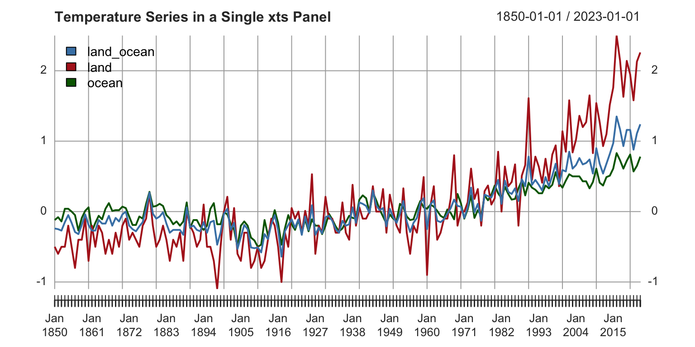
Figure 4.15: Multiple xts series shown together in a single panel.
Code
plot.xts( gtemp_xts,multi.panel =TRUE,col =c("steelblue", "firebrick", "darkgreen"),lwd =2,main ="Temperature Series in Separate xts Panels",major.ticks ="years")
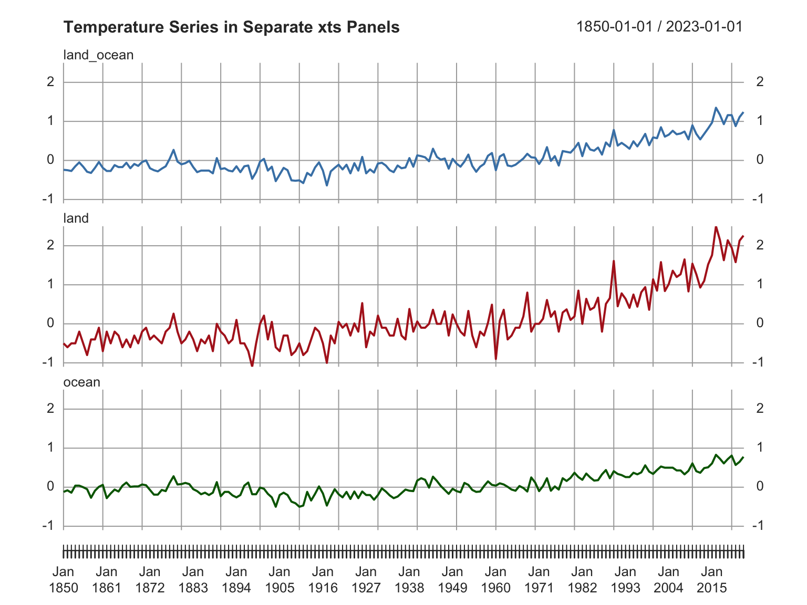
Figure 4.16: Each xts column displayed in a separate panel using multi.panel = TRUE.
Code
#eu_xts <- tsbox::ts_xts(EuStockMarkets)plot.xts( eu_xts[, 1:4],multi.panel =2,col =2:5,lwd =1.5,main ="EuStockMarkets Grouped Two Series per Panel",major.ticks ="years")
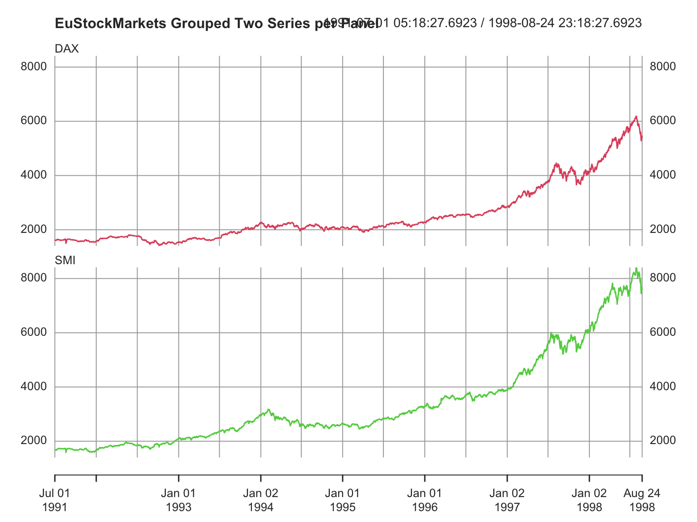
Figure 4.17: An xts plot where columns are grouped by panel using an integer value for multi.panel.
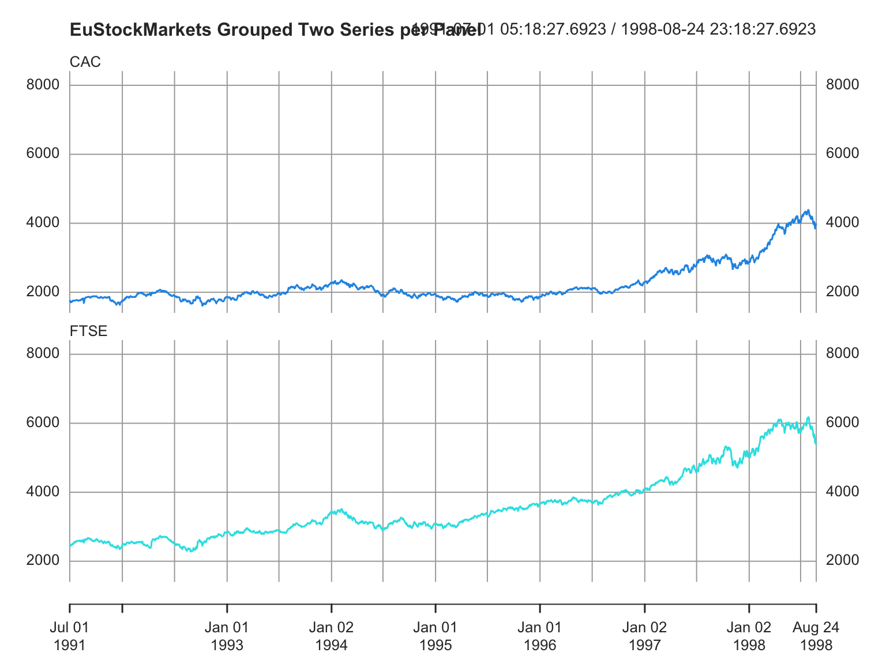
Figure 4.18: An xts plot where columns are grouped by panel using an integer value for multi.panel.
Figure 4.20: An xts plot with explicit major ticks and observation-based spacing.
Code
plot.xts( eu_xts[, "SMI"],col ="brown",lwd =2,main ="SMI on a Log Scale",major.ticks ="years",log =TRUE)
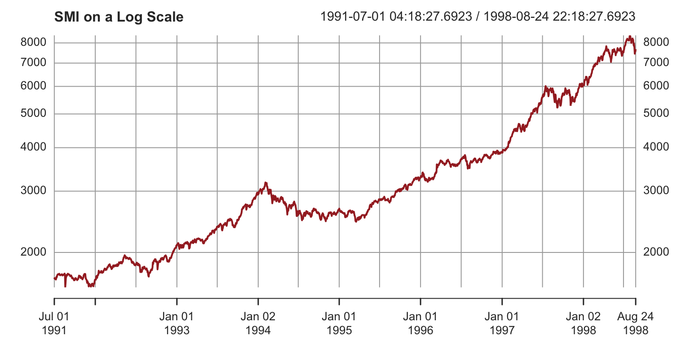
Figure 4.21: An xts plot with logarithmic scaling on the y-axis.
NoteNotice
Indexed objects are especially useful when the time index itself is important. plot.xts() adds flexible control over temporal subsetting, tick marks, and multi-panel indexed displays.
4.6 Plot Tidy Time Series with tsibble
An introduction to the tidy workflows (which means that you may use tools from the tidyverse ecosystem, like tidy data (tibbles, data frames), pipe operators (%>%, for data processing chains), and various tools for data import, manipulation, representation, etc.
# You'll need this library, for examples from the fpp3-supported booklibrary(fpp3)gdppc <- global_economy |>mutate(GDP_per_capita = GDP / Population)gdppc |>filter(Country =="Sweden") |>autoplot(GDP_per_capita) +labs(y ="$US", title ="GDP per capita for Sweden")
ggplot(gtemp_tsibble, aes(x = year, y = anomaly)) +geom_line(color ="purple", linewidth =0.8) +labs(title ="Global Temperature Anomalies as tsibble",x ="Year",y ="Temperature anomaly" ) +theme_minimal()
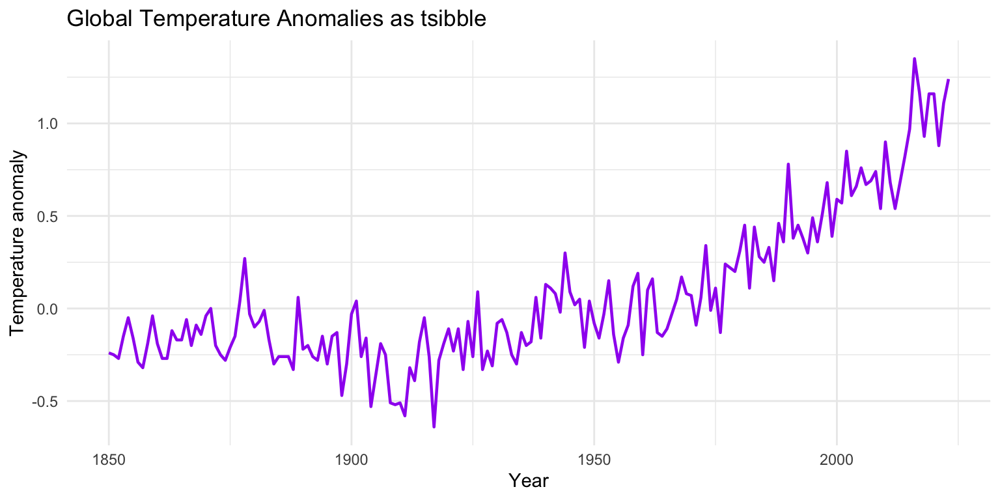
Figure 4.22: Plot of the temperature anomaly series stored as a tsibble and rendered with ggplot2.
Please notice the facet_wrap construction. You can play with facets, for example, add ncol=1 for variation.
Code
# Check the availble facets. Should see land/ocean/land_oceangtemp_multi_tsibble |> dplyr::distinct(series)
# A tibble: 3 × 1
series
<chr>
1 land
2 land_ocean
3 ocean
Code
gtemp_multi_tsibble |>mutate(year_band =case_when( year >=1880& year <=1899~"1880-1899", year >=1900& year <=1919~"1900-1919", year >=1920& year <=1939~"1920-1939", year >=1940& year <=1959~"1940-1959",TRUE~"Other" ) ) |>filter(year_band !="Other") |>ggplot(aes(x = year, y = anomaly)) +geom_line() +facet_wrap(~ year_band)ggplot(gtemp_multi_tsibble, aes(x = year, y = anomaly)) +geom_line(color ="steelblue", linewidth =0.7) +facet_wrap(~series, scales ="free_y", ncol=2) +labs(title ="Facet Plot of Multiple Temperature Series",x ="Year",y ="Temperature anomaly" ) +theme_minimal()
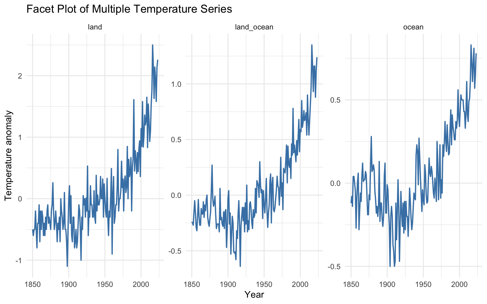
Figure 4.23: A keyed tsibble plotted with one panel per series.
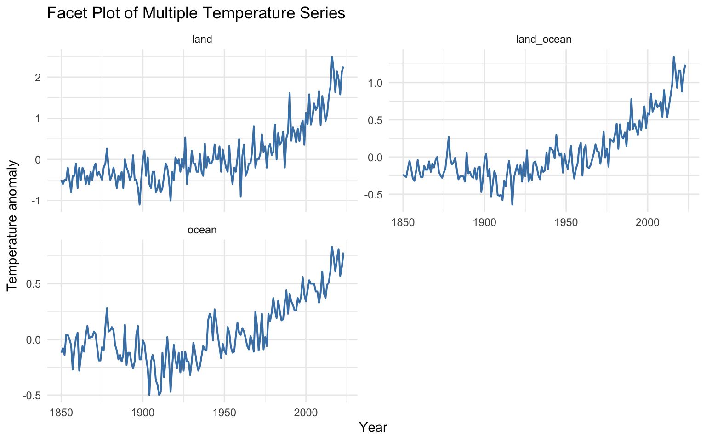
Figure 4.24: A keyed tsibble plotted with one panel per series.
Faceted tsibble (2/2)
Code
# Check the available names firstnames(gtemp_multi_tsibble)
[1] "year" "series" "anomaly"
Code
# The available values should be year, series, anomaly. unique(gtemp_multi_tsibble$series)
[1] "land" "land_ocean" "ocean"
Code
# Do some filtering/transformations. For example, define some year bandsgtemp_multi_tsibble |>mutate(year_band =case_when( year >=1880& year <=1899~"1880-1899", year >=1900& year <=1919~"1900-1919", year >=1920& year <=1939~"1920-1939", year >=1940& year <=1959~"1940-1959",TRUE~"Other" ) ) |>filter(year_band !="Other") |>ggplot(aes(x = year, y = anomaly)) +geom_line() +facet_wrap(~ year_band, ncol=1)# And plot, at the end of the pipeline
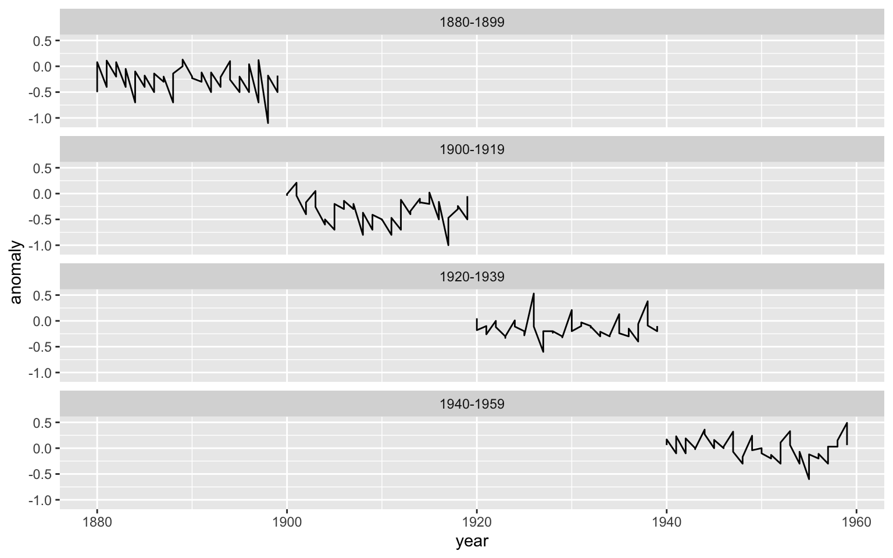
Figure 4.25: A keyed tsibble plotted with one panel per series.
Plotting multiple datasets (series) together, using colormaps. There are different options, use the simplest.
Code
ggplot(gtemp_multi_tsibble, aes(x = year, y = anomaly, color = series)) +geom_line(linewidth =0.8) +labs(title ="Global Temperature Anomaly Series",x ="Year",y ="Temperature anomaly",color ="Series" ) +theme_minimal()
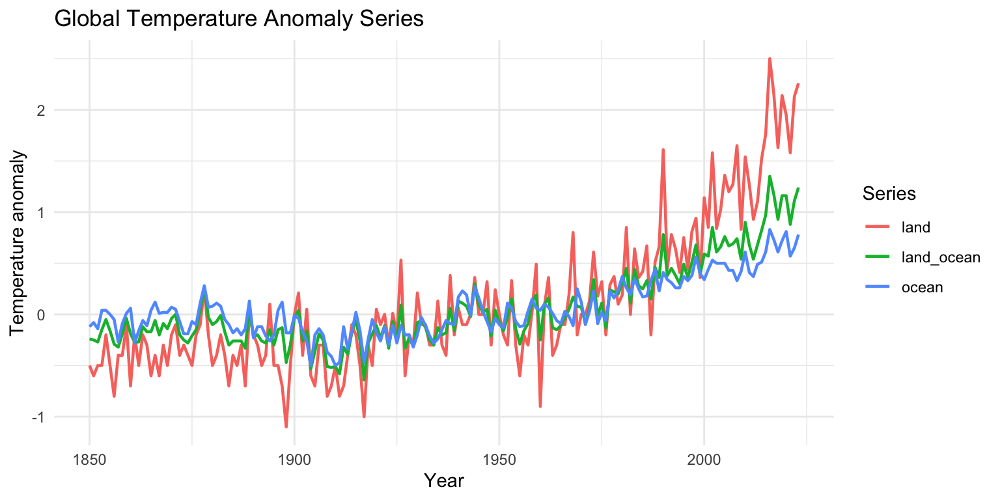
Figure 4.26: A long-format tsibble plotted with explicit color mapping for multiple series.
NoteDiscussion
A tsibble integrates naturally with tidy plotting syntax and makes it easy to manage multiple series in a long-format structure.
4.7 Find a Trend
Trend (or smoothed pattern) identification, by some simple means. Derive a time series (check the stats::filter construct).
Figure 4.29: A simple comparison between the original and smoothed versions of the same series.
NoteDiscussion
Smoothing helps readers distinguish broad patterns from short-term variation, but it should always be presented as an analytical aid rather than as a replacement for the observed data. There are various functions available in the various time-series libraries.
4.8 Visualize Distribution and Variation Over Time
A complementary approach, offering alternative views of temporal variation.
Check the par(mfrow = c(...)) construction, for an easy setup.
Code
par(mfrow =c(1, 2))plot(gtemp_both_ts, col ="steelblue", main ="Land + Ocean")plot(gtemp_land_ts, col ="firebrick", main ="Land only")par(mfrow =c(1, 1))
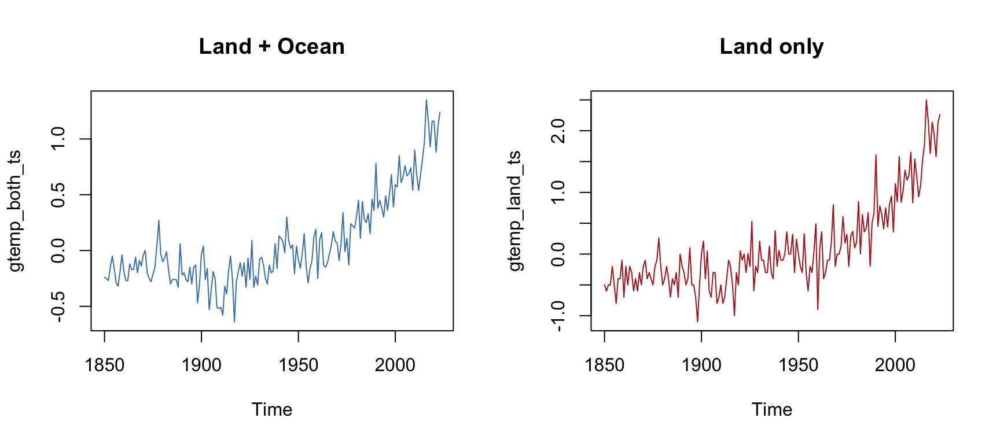
Figure 4.34: A base R multi-panel layout using par(mfrow = c(1, 2)).
Use a faceted view, when you have the necessary details on your data (may require additional investigations).
Code
ggplot(gtemp_multi_tsibble, aes(x = year, y = anomaly)) +geom_line(color ="steelblue", linewidth =0.8) +facet_wrap(~ series, scales ="free_y", ncol =2) +labs(title ="Comparison of Temperature Series",x ="Year",y ="Temperature anomaly" ) +theme_minimal()# if you're unsure about the scale_color_manual values, useunique(gtemp_multi_tsibble$series)
[1] "land" "land_ocean" "ocean"
Code
# at 1st level, head(unique(gtemp_multi_tsibble),0) will return avail. variables ggplot(gtemp_multi_tsibble, aes(x = year, y = anomaly, color = series)) +geom_line(linewidth =0.8) +facet_wrap(~ series, scales ="free_y", ncol =2) +scale_color_manual(values =c("land"="darkred","land_ocean"="orange2","ocean"="steelblue" )) +labs(title ="Comparison of Temperature Series",x ="Year",y ="Temperature anomaly" ) +theme_minimal() +guides(color ="none")
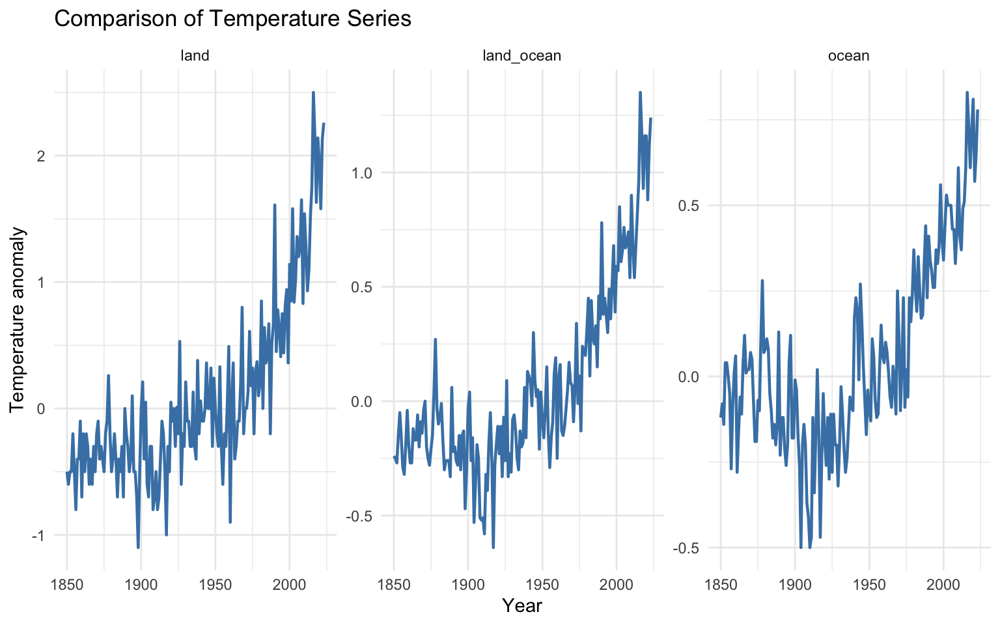
Figure 4.35: A faceted layout using ggplot2, which might be more robust than base multi-panel state.
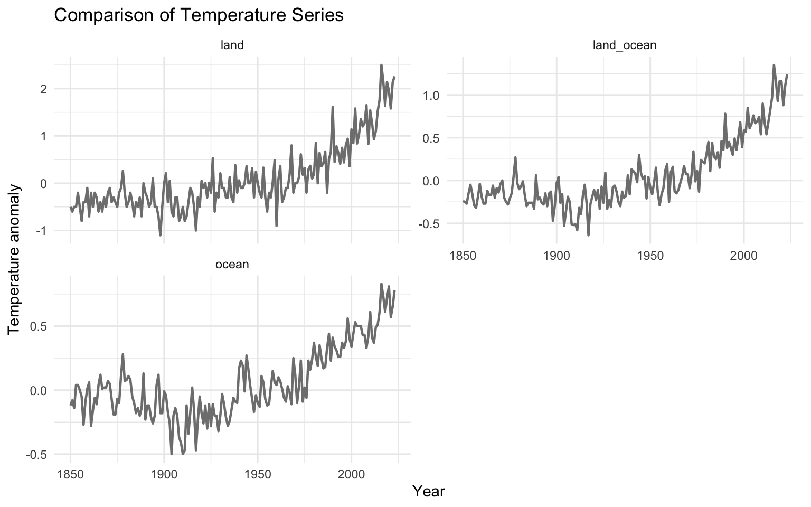
Figure 4.36: A faceted layout using ggplot2, which might be more robust than base multi-panel state.
Plotting is not just about choosing a function. It also involves choosing the representational level, the visual emphasis, and the narrative role of the figure within the chapter.
4.11 Summary
We had a simple investigation on how to plot time series across several major R frameworks: base ts, ts.plot(), indexed zoo/xts, and tidy pipelines based on ggplot2, ggfortify, and tsibble.
We covered various options, from first plots to explicit plot.ts() and plot.xts() variations, multi-series comparisons, smoothing overlays, alternative chart types, and multi-panel layouts.
Plotting heavily depends on representation: for the same time series data you can inspect them one form, customize in another one, and arrange into comparative displays in yet another. Choosing the plotting approach depends on data representation and analytical workflow of your choice.
ImportantWhen to Use ts.plot(), plot(), ggplot(), and autoplot()
Use plot() when you want the default plotting method associated with an object class. For example, plot(ts_object) dispatches to plot.ts(), while plot(xts_object) dispatches to plot.xts().
Use plot.ts() when you want explicit control over classical time-series plotting for ts objects, especially for multivariate displays with plot.type = "single" or plot.type = "multiple", panel layouts via nc, and x–y / lag-style plots.
Use ts.plot() when the main goal is to place several separate time series on a common time axis with minimal syntax, especially when they share the same frequency.
Use plot.xts() when working with indexed time series where explicit control over time subsetting, major tick marks, observation-based spacing, or multi-panel indexed views is important.
Use ggplot() when you want full customization and are comfortable working from an explicit tabular representation such as a data frame, tibble, or tsibble.
Use autoplot() when a package supplies a useful automatic plotting method for a class (for example, a ts object via ggfortify-style support). It is convenient, but usually less flexible than building the plot explicitly with ggplot().
In practice, base plotting functions (plot.ts, ts.plot, plot.xts) are often the quickest for exploratory work, while ggplot2-based workflows are usually the best choice when plots need to be highly customized, combined, or publication-ready.